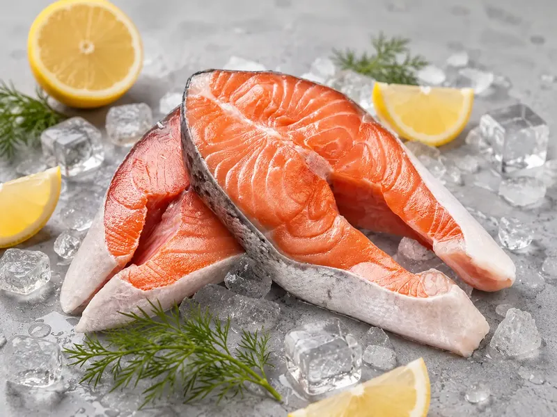

Стейки и филе
Стейк форели охлаждённый
Цена и наличие
- 1 кг71,61 BYN / кгВ наличии
Данные на 23.11.2026.
Характеристики
- Страна
- Республика Беларусь
- Производитель
- ООО " РитейлФиш"
Описание
Стейк форели станет отличным выбором для тех, кто ценит здоровое питание и высокое качество.
ОСНОВНОЕ
Пищевая ценность на 100 г продукта белки – 19 г, жиры – 2 г, углеводы – 0 г Энергетическая ценность на 100 г продукта 90 ккал Тип питания низкокалорийный продукт, экологичный продукт Условия и срок хранения хранить в бытовом холодильнике, не больше суток, в нулевой зоне свежести или замораживать Страна Республика Беларусь
ДОПОЛНИТЕЛЬНО
Стейк форели охлажденный — это идеальный выбор для тех, кто ценит свежесть, натуральный вкус и пользу качественной рыбы. Продукт отличается нежной текстурой, насыщенным вкусом и привлекательным внешним видом, что делает его отличной основой для приготовления ресторанных блюд в домашних условиях. Благодаря охлажденному состоянию стейк сохраняет максимум полезных веществ, включая омега-3 жирные кислоты, витамины группы B и легкоусвояемый белок, необходимый для здорового питания. Форель известна своим мягким, деликатным вкусом без резкого рыбного запаха, поэтому она подходит как для запекания, так и для жарки, гриля или приготовления на пару. Стейки имеют оптимальную толщину, что обеспечивает равномерную прожарку и сочность готового блюда. Продукт не требует длительной подготовки, что экономит время на кухне и позволяет быстро приготовить полезный ужин. Охлажденный стейк форели — это сочетание высокого качества, свежести и универсальности. Он отлично вписывается в рацион правильного питания, подходит для диетического меню и станет прекрасным выбором как для повседневных блюд, так и для особых случаев.